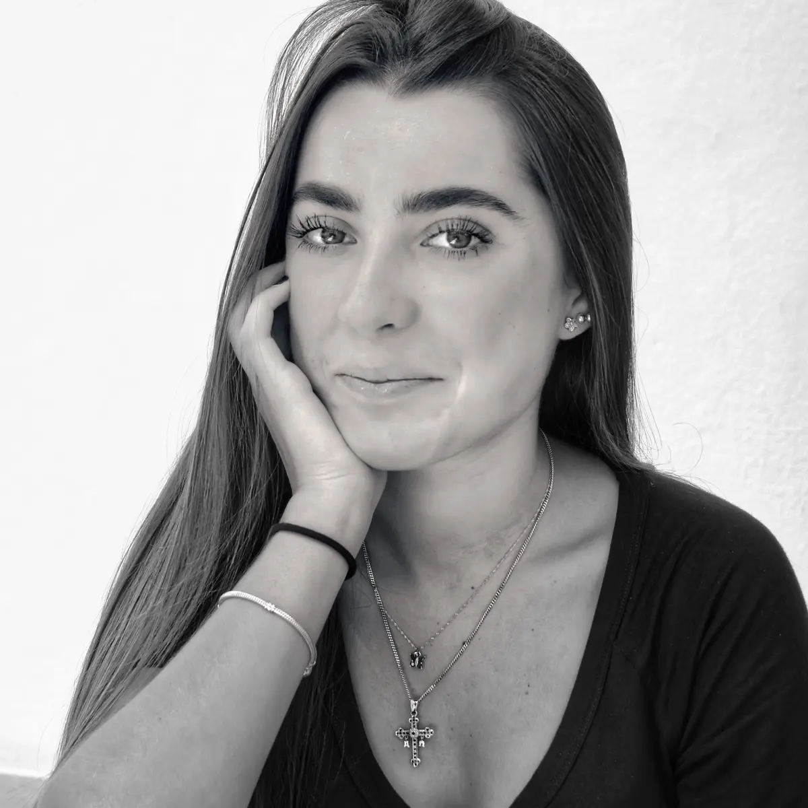
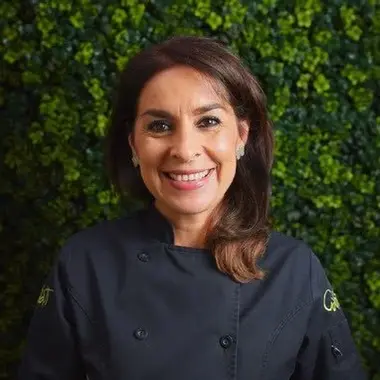

Cada opción es la misma página principal (hero, cómo funciona, planes, testimonios, cierre) con el contenido real del sitio. Elige una, o dime qué partes de cada una te gustan y las combino.
Tus fotos en blanco y negro ya tienen calidad editorial. Esta dirección las trata como portada de revista de moda y cultura: masthead enorme, titulares tipo portada y una cita grande como pausa. Tiene mucha autoridad y personalidad, y usa el rosa solo como tinta.
Planes que se adaptan a tu vida, no al revés.
En este número
Así funciona tu plan
Tus datos, objetivos, hábitos, rutina y lo que te gusta comer.
Con equivalencias, menú ejemplo y recomendaciones para tu vida real.
Dudas por WhatsApp y, cuando lo necesites, un Plan de seguimiento.

Perfil
Marialy Alonso estudió Nutrición en la Universidad Iberoamericana y se tituló con Mención Honorífica. Su enfoque va más allá de las dietas restrictivas: crear hábitos sostenibles que mejoren tu salud a largo plazo.
Trabaja relación con la comida, SOP, resistencia a la insulina, pérdida de grasa y rendimiento, y se coordina con tu médico cuando hace falta.
“Obtuve súper buenos resultados sin hacer nada extremo ni estar en dietas restrictivas.”Emma Pinto · @chefeemmapinto
Planes
Primera vez
Ya soy paciente
Lo que vendes es literalmente un documento: el cuestionario que llena el paciente y el plan que recibe. Esta dirección diseña el sitio como ese papel: hoja cuadriculada, formulario lleno a mano, un sello de “plan listo”, tabla de equivalencias y precios en forma de recibo. Es la opción más clara y la que mejor explica el producto.
Plan a distancia · sin videollamada
Plan de alimentación 100% personalizado según tus objetivos, hábitos, horarios y gustos. Por Marialy Alonso, nutrióloga (Ibero, Mención Honorífica).
Pagas en línea (tarjeta, OXXO o transferencia) y te llega el cuestionario.
Con tus datos, objetivos, hábitos, horarios y preferencias.
Dudas por WhatsApp. Cuando quieras ajustes, Plan de seguimiento.
Qué recibes
Tu plan incluye un sistema de equivalencias para cambiar un alimento por otro del mismo grupo, un menú ejemplo y estrategias para cuando comes fuera de casa.
| Grupo | 1 equivalente es… | o también |
|---|---|---|
| Cereal | 1 tortilla de maíz | ⅓ taza de avena |
| Fruta | 1 manzana chica | 1 taza de papaya |
| Verdura | ½ taza de nopal cocido | 1 jitomate |
| Leguminosa | ½ taza de frijol cocido | ½ taza de lenteja |
Ejemplo ilustrativo. Tus porciones dependen de tu plan.
“Su conocimiento y enfoque personalizado son excepcionales.”
“Todo mi plan fue muy balanceado y diario me apoya en todas mis dudas.”

Emma P. · paciente“Tengo una mejor relación con la comida.”
La dirección más atrevida. Toma sus colores del mercado (rosa mexicano, mango y nopal) y usa tipografía condensada gigante, stickers y bloques de color. Se siente como la continuación natural de tus redes y rompe por completo con la estética de “clínica de nutrición”. Tiene mucha personalidad, aunque es menos sobria.
Sin dietas raras. Un plan de alimentación hecho para tu vida, tus horarios y lo que sí te gusta comer. Sin videollamada: llenas un documento y en 5–7 días hábiles tienes tu plan.
Empezar por $1,200 MXN →Tus objetivos, rutina, horarios y gustos.
Con equivalencias y un menú ejemplo para tu día a día.
Me escribes por WhatsApp cuando tengas dudas.
“¡La mejor nutrióloga! Súper buenos resultados sin hacer nada extremo.”
“No solo cumplo mis metas, tengo una mejor relación con la comida.”
“Logré mis objetivos de salud con facilidad. ¡Totalmente recomendado!”
Muchas visitas llegan con ansiedad por su cuerpo o su alimentación. Esta dirección baja el volumen: rosa empolvado, ciruela profundo y salvia, formas redondas, foto en arco y un tono cálido. El precio es una sola tarjeta con selector (primera vez o ya soy paciente) y las preguntas frecuentes van justo debajo. Es la versión más cercana a tu sitio actual, pero con identidad propia.
Un plan de alimentación a tu medida, pensado para tus horarios, tus gustos y tu ritmo. Sin extremos, sin culpa y sin videollamadas.
Cómo funciona
Llenas un documento con tus objetivos, rutina, horarios y lo que te gusta comer.
En 5–7 días hábiles recibes tu plan con equivalencias y un menú ejemplo.
Me escribes cuando tengas dudas y actualizamos el plan cuando lo necesites.
Planes
Si es tu primera vez, empieza con el Plan inicial. Si ya tienes un plan conmigo, el de seguimiento lo ajusta a tus avances.
“La idea no es darte una dieta genérica, sino una guía que puedas aplicar de manera realista en tu día a día.”Marialy Alonso · Nutrióloga, Universidad Iberoamericana
Preguntas frecuentes
No. El plan es completamente asíncrono: tú envías tu información por el documento y yo te entrego el plan listo para aplicar.
Aproximadamente 5 a 7 días hábiles después de recibir tu documento completo.
Sí, con diabetes, hipertensión y enfermedades autoinmunes, siempre en coordinación con tu equipo médico.
Fondo vino oscuro, serif clásica y los planes presentados como la carta de un restaurante fino: nombre, línea punteada y precio. Hace que $1,200 MXN se sienta como una experiencia curada y no como un producto de oferta. Las credenciales van en una franja propia y un solo testimonio grande hace de pausa.
Nutrición personalizada a distancia
Cada plan se escribe desde cero con tus objetivos, tus horarios y lo que te gusta comer. Sin videollamada y sin plantillas.
No solo me ayuda a cumplir mis metas, sino que tengo una mejor relación con la comida.
Todas las opciones mantienen lo que ya funciona: Stripe, transferencia SPEI, WhatsApp, blog, calculadoras y SEO. Solo cambia la capa visual y el orden de las secciones. Las calculadoras y el pago seguirían con un estilo más sobrio, como pide la guía de diseño actual.